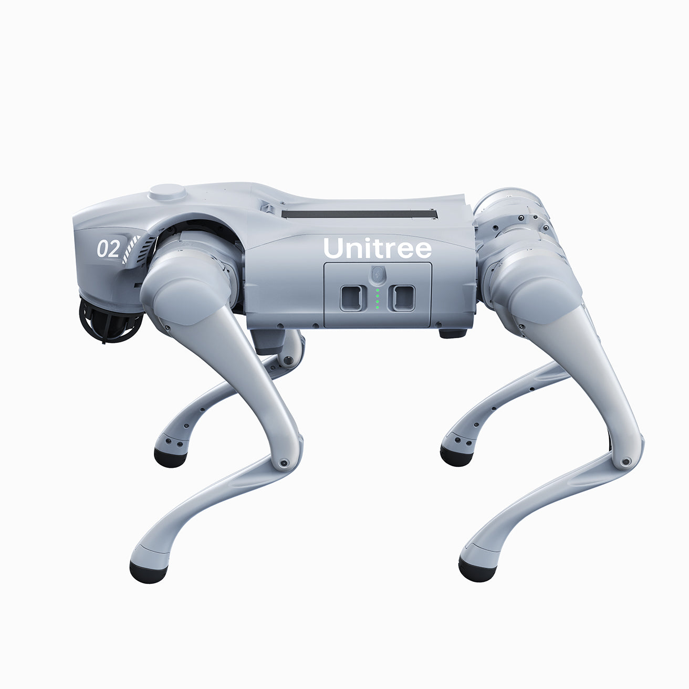

CameraStandby
UCONN SENIOR DESIGN · TEAM 45
One place to operate Oak.
Connect to the Unitree Go2, check its sensors, issue supported actions, and test voice commands from a clear desktop workspace.
Offline simulator
Unitree Go2Project platform · Oak
SIMULATED

ROS 2 HumbleWebRTCGo2 Fusion
LiDARStandby
MotionStandby
ObjectsDetector offline
Manual controlHold a key or button to move in Mock Mode
W A S D
Commanded speed
0.00m/s
Standing by
Physical movement is disabled until robot testing.Voice commandHold the button while speaking, then release
DRY RUN
1
Press and hold
2Speak clearly
3Release to process
Microphone idle
Waiting for a command.
Robot actionsSupported Go2 posture and gesture commands
PerceptionLive sensor and object-detection entry points
LiDAR PREVIEW
Switch to Robot Mode to read detections.
Recent activityCommands remain local while Mock Mode is selected
- Commands will appear here.
THE PEOPLE BEHIND OAK
UConn Senior Design Team 45
Jeth GomezLuis MendezAdib RoufNoah SteinbergMax Hawksby
Faculty advisorDr. Jonathan Ji